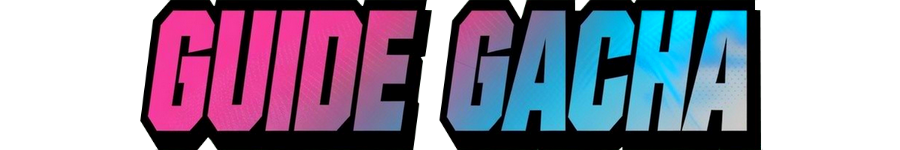
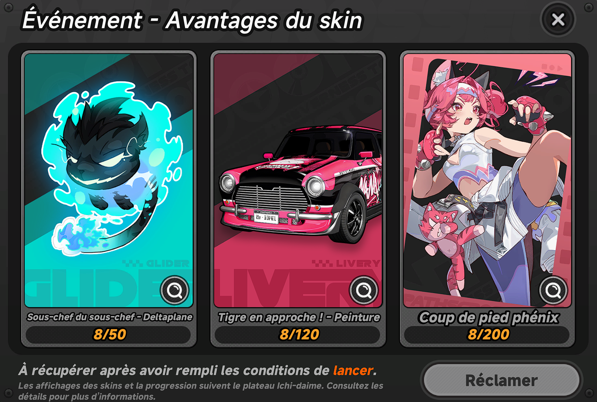
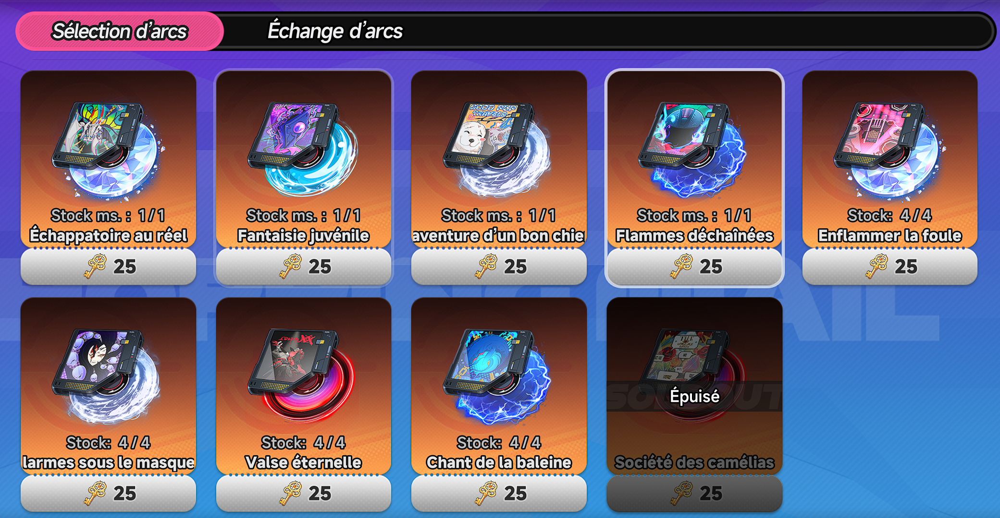
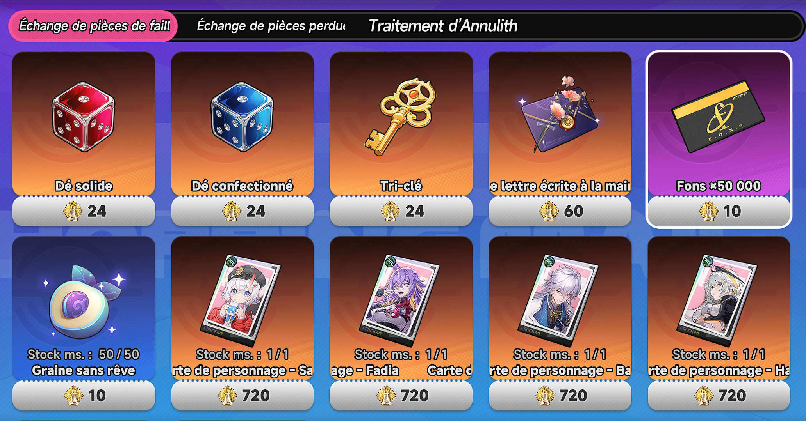
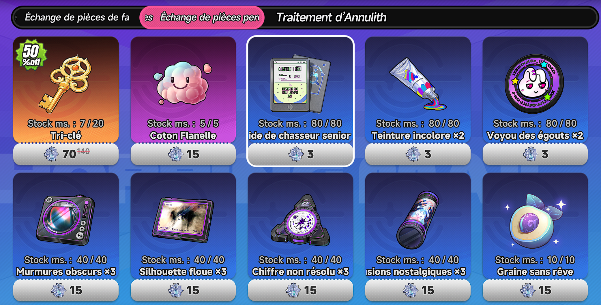

LE GACHA DANS NTE

Le système de tirage de NTE est assez unique, du moins sur la façon de faire les tirages. Comme dans la plupart des jeux de ce type vous aurez une bannière permanente ainsi qu'une bannière limitée
Chaque tirage utilise des "DÉS" de jeux de plateau, les dés solides pour la bannière limité, et les dés confectionnés pour la bannière permanente.
Le système de tirage se présente comme un peu de plateau :

Techniquement parlant, cela fonctionne comme des tirages classique, c'est simplement présenté autrement (mais j'aime bien l'idée).
Un peu de détail sur le fonctionnement et les taux :
- Le Gardien : petit esprit qui apparaît au hasard sur le plateau et va fuir de 9 cases puis 2 cases par tour. Vous avez 3 lancés pour le rattraper et recevoir 30 pièces de chaîne.
- Les coffres violets : il y a 0,2% d'avoir un esper S et 99,8% d'avoir un arc B.
- Les coffres dorés : il y a 3% d'avoir un esper S et 97% d'avoir un arc B.
- Les cases avec le portrait d'un esper : il y a 100% d'avoir l'esper présenté.
- Dés de relance : le premier permet de relancer une fois, le second permet de relancer 5 fois.
- Autres cases : elles permettent d'obtenir des pièces d'échange, des arcs A et divers autres récompenses.
- Les cases sont générées aléatoirement mais toujours en se basant sur les taux de base de chaque éléments.
BANNIÈRE LIMITÉE
COntrairement à d'autres jeux de gacha, il n'y a pas de 50/50 dans NTE. Oui oui, pas de chances random pour avoir l'esper que vous voulez. Le taux d'obtenir l'esper S ou A en vedette sur la bannière est de 100%, du moins quand vous tombez dessus ^^.
Pour être précis : il y a 1,87% de chance de tomber sur une Classe S (Arc + Espers) et 22,98% de tomber sur une Classe A (Arc et Espers)

Si au bout de 50 tirages, vous n'avez toujours pas fait tombé un Classe S, alors le plateau change et augmente drastiquement le taux d'obtention, passant le taux de Classe S à 19,59%
Pour finir, au 90ème tirage vous avez la garantie d'obtenir l'esper S en vedette
Cette pity à 90 tirages perdure même si la bannière change.
Pourquoi est-ce si avantageux pour nous ?
Car le jeu se base sur les cosmétiques, sur les bannière limités, plus vous faites de tirages plus vous pouvez obtenir des cosmétiques lié au personnage vedette ! Et c'est là dessus que le jeu compte pour faire dépenser.

BANNIÈRE PERMANENTE ET LE SYSTÈME DE PITY
Bon comme son nom l'indique, cette bannière est présente en permanence et possède les mêmes caractéristiques que la limité, hormis le fait qu'il n'y a pas de personnage en vedette ^^.
Donc rien de bien nouveau, hormis la réduction du prix des tirages pour les 50 premiers et évidemment le ticket sélecteur après ces 50 tirages.

Lors de vos tirages vous obtiendrez également des "pièces" ou des "Tri-clés", c'est ce qui ce rapproche de plus d'une pity boutique, vous en accumulez pendant vos tirages et les échangez dans la boutique.
Les tri-clés servent à obtenir des arcs

Les pièces à obtenir des tirages, du matériel ou des tri-clés

